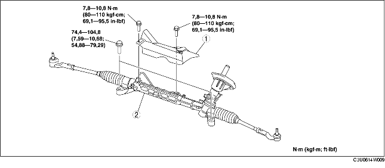

REMOCION/INSTALACION CAJA Y ARTICULACIONES DE LA DIRECCION
B3E061432960W01
-
Advertencia
-
• Si los pasos siguientes se realizan sin haber quitado primero el sensor de velocidad rueda ABS, podría producirse una apertura en el circuito causada por haber tirado del cableado. Antes de efectuar los procedimientos siguientes, desconectar el conector (lado eje) del sensor velocidad rueda del ABS y fijar el cableado en un lugar seguro para evitar que durante el mantenimiento pueda caer accidentalmente.
1. Quitar el travesaño delantero, el brazo inferior, el estabilizador delantero, caja y articulaciones de la dirección como un canjunto único. (Véase REMOCION/INSTALACION TRAVESANO DELANTERO).
2. Quitar según el orden indicado en la tabla.
3. Instalar en el orden contrario al de la remoción.
4. Después de la instalación, controlar la alineación de las ruedas traseras delanteras y ajustarlas si es necesario. (Véase ALINEACION RUEDAS DELANTERAS).

.
|
1
|
Aislador
|
|
2
|
Caja y articulaciones de la dirección
|